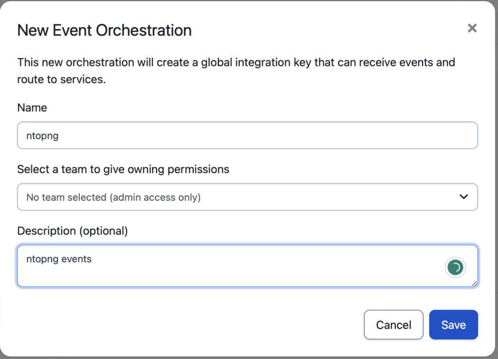
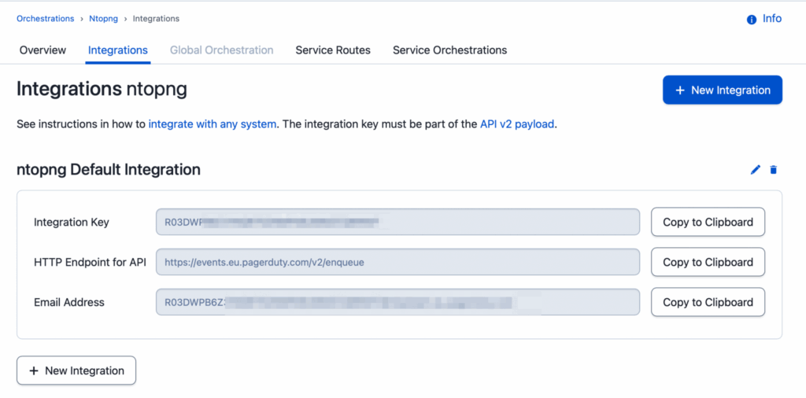
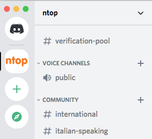
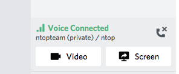
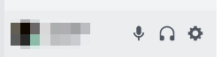
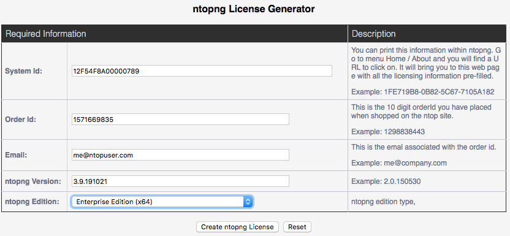
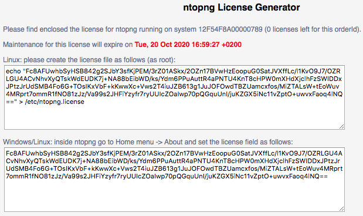

FAQs
Here you can find common questions about different topics including products, software installation, licenses and nBox appliances.
If you need more help...
If you cannot find an answer here, nor in the documentation, please contact us.
General
How to use PagerDuty to Deliver ntopng Alerts
PagerDuty is a popular incident-response platform that allows problem notifications to be delivered in a flexible way to the correct team member. We have integrated it in ntopng Enterprise and this post shows you howto configure it.
First of all you need to create a PagerDuty account and select a plan (there is a free one you can choose). Done that within PagerDuty you need to select “Event Orchestration” from the “Automation” menu and create a new event orchestration. Below you can see an example.

Once you saved it click on the Integrations menu and the integration key will be displayed. Now copy the integration key in the clipboard

Then you need to create a ntopng recipient for this endpoint where you select what alerts to deliver to PagerDuty. Once you save the setting ntopng is ready to go and as soon as a new alert is generated, it will also be delivered to PagerDuty.
Enjoy!
How do I set the input and output interface Id?
By default nProbe tries to emulate a switched environment even if a mirror packet stream is used. For this reason both input and output interfaces are set to the last two bytes of the MAC address of the packet that is part of the flow. While this is a nice property, it is not likes by some netflow collectors that instead rely on static/physical interface numbers. nProbe supports this, however you need to understand first how interfaceId works on NetFlow and how to set it on nProbe.
The netflow id corresponds to the SNMP interfaceId and not the nprobe interface id. In order to find the correct value, it is necessary to snmpwalk on the host where nprobe is active, and see what are the indexes associated with the interfaces. In other words it is necessary to make sure that the snmp interfaceId and netflow interfaceId are consistent.
Example:
sh-3.2# snmpwalk -v 1 -c public localhost ifDescr
IF-MIB::ifDescr.1 = STRING: lo0
IF-MIB::ifDescr.2 = STRING: gif0
IF-MIB::ifDescr.3 = STRING: stf0
IF-MIB::ifDescr.4 = STRING: en0
IF-MIB::ifDescr.5 = STRING: fw0
IF-MIB::ifDescr.6 = STRING: en1
IF-MIB::ifDescr.7 = STRING: en2
IF-MIB::ifDescr.8 = STRING: en3
This means that we need to use interfaceId 8 for en3, 7 for en2….
Note that some collectors do not like flows with the same input and output interfaceId, so in case you use the same Id for in and out, this can create problems.
What is the competitive advantage of ntop?
In a globalized world where components coming from many countries need to be packaged together, ntop is unique as the products are home-grown with no dependencies on third parties. This means fast application development/customization and support directly from the source. ntop has been around for over 10 years now, it has proven to be a innovative product and we are here to stay!
What is the PF_RING ZC distribution format?
PF_RING ZC is made of two components: kernel drivers and user-space library. The kernel driver is released in source format as part of PF_RING, whereas the user-space library is released in binary format and it requires a per-MAC licenses.
How much bandwidth does NetFlow take during export?
Exporting traffic data in NetFlow takes some bandwidth that can be pre-computed using various methods. The bandwidth consumed by NetFlow (or its variants like IPFIX, sFlow, jFlow) during export is relatively small, but it depends critically on several factors.
Short Answer
For a typical enterprise network, NetFlow exports consume between 0.1% and 2% of the monitored link’s bandwidth. It is designed to be very lightweight.
How to Estimate Bandwidth?
You can estimate the export bandwidth with this calculation:
Bandwidth (bps) = Flows per Second × Bytes per Flow Record × 8 bits/byte
Example 1 (Conservative Enterprise Core):
- A busy router sees 10,000 new flows per second.
- Using NetFlow v9 with an average of 100 bytes per flow record.
- 10,000 flows/sec * 100 bytes/flow * 8 bits/byte = 8,000,000 bps (8 Mbps).
- If this router has a 10 Gbps (10,000 Mbps) uplink, the overhead is 8/10000 = 0.08%.
Example 2 (Aggressive/High-Granularity Export):
- A security-focused export with layer 7 data sees 25,000 flows/sec.
- Larger flow records at 150 bytes each.
- 25,000 * 150 * 8 = 30,000,000 bps (30 Mbps).
- On a 1 Gbps link, that’s 30/1000 = 3% overhead (still manageable, but noticeable).
Real-World Scenarios & Rule of Thumb
| Scenario | Estimated Flows/sec | Est. Export Bandwidth | Notes |
|---|---|---|---|
| Small/Medium Business | 500 – 2,000 | 400 kbps – 1.6 Mbps | < 0.5% of a 1 Gbps link. Negligible. |
| Large Enterprise Core | 5,000 – 20,000 | 4 Mbps – 16 Mbps | ~0.1% of a 10 Gbps link. Very low. |
| Large Data Center/ISP Edge | 50,000 – 200,000+ | 40 Mbps – 160+ Mbps | Can be 1-3% of a 10 Gbps link. Must be planned for. |
| Internet Exchange (IX) Router | 1,000,000+ | 800 Mbps+ | Significant traffic. Requires dedicated collector ports. |
Important Considerations
- Burstiness: Flow export is not smooth. When the cache fills or timeouts hit, many records are sent at once.
- UDP is Unreliable: The protocol is UDP-based. If the export path is congested, flow records will be lost. Always monitor for drops on both the exporter and collector.
- Sampling (sFlow vs. NetFlow): If you use sFlow (which is packet-sampled) or enable sampled NetFlow, the export bandwidth is dramatically reduced (often by a factor of 100-1000x), at the cost of granular accuracy.
- Collector Capacity: The bandwidth concern is often less about the network and more about ensuring your collector server has enough NIC and processing power to ingest the flow datagrams, especially during traffic spikes.
Conclusion: For the vast majority of enterprise networks, NetFlow export bandwidth is trivial. In massive-scale environments (ISP, hyperscale DC), it requires careful planning but is still a tiny fraction (<5%) of the monitored traffic. The operational benefit of network visibility far outweighs the minimal bandwidth cost.
Migrate the data directory in ntopng/nEdge
Up to release 3.6 ntopng on Unix systems is using ‘/var/tmp/ntopng’ as default directory for storing historical data, and ‘nobody‘ as default user.
Since ntopng 3.7, for security reasons, the default setting for the data directory has been changed to ‘/var/lib/ntopng’, and the default user has been changed to ‘ntopng‘ (which is created during package installation if you are installing from our repositories, otherwise it keeps using ‘nobody‘).
In order to maintain backward compatibility, if you are already using ‘/var/tmp/ntopng’ as data directory, ntopng keeps using that folder, owned by ‘nobody‘. This said, using the old defaults is not recommended and a manual action is required in order to migrate to the new settings, unless you are already using a custom directory:
- stop ntopng (or nedge)
- move ‘/var/tmp/ntopng’ to ‘/var/lib/ntopng’
- change the owner to ‘ntopng’
- start ntopng (or nedge)
Example on systemd-based systems:
systemctl stop ntopng
rmdir /var/lib/ntopng
mv /var/tmp/ntopng /var/lib/ntopng
chown -R ntopng:ntopng /var/lib/ntopng
systemctl start ntopng
Please note that it is still possible to customize the data directory path using the –data-dir|-d <path> parameter to override the default settings.
HowTo Join Public ntop Discussions
In order to join public discussion channels you need first to install discord or connect to it using a web browser. Then you need to create a discord account for logging into discord. Once there you need to join the ntop server clicking on this link
In particular for voice channels and joining public discussions, you need to click on the “public” channel under the voice channel as shown in the picture below

Once there you are in the public voice channel so if you speak everyone can hear you.

At the bottom of the left discord sidebar you can see the above image once you are connected to the channel. You can disconnect clicking on the X icon, or share your webcam or your screen clicking on the icon below. At the bottom of the screen you can find some icons that allow you to change your multimedia settings, mute etc.

To What IP/Domain Names ntopng Connects To ?
ntop tools are totally passive but they occasionally perform some active traffic to operate. Knowing the list of these IP/hosts can help to make sure the firewall infrastructure is ntopng-friendly
- When ntopng starts up it connects to https://www.google.com to check if the host has Internet connectivity.
- Availability of new packages are periodically connecting to packages.ntop.org.
- In the top right ntopng corner there is a feed that connects to feed.ntop.org to fetch the latest news.
- ntopng periodically downloads blacklists (menu Settings -> Category Lists) so make sure you can connect to them in order to download the files.
If you are using ntopng on a site with no Internet access, ntopng might be slow. For this reason we invite you start ntopng with –offline to disable Internet access to the above sites.
Guest Posts and Content on ntop.org
What is the ntop.org website used for?
The ntop.org website exists to share information about our tools — ntopng, nDPI, PF_RING, and the rest of the ntop suite — along with research, technical articles, and updates from our community. It’s a resource for network engineers, security professionals, and researchers who use or are evaluating our software.
Do you accept guest posts?
No. We do not accept guest posts on ntop.org. This is a deliberate choice, not an oversight.
Why not?
- We want to avoid advertising. Guest posts are often a vehicle for promoting unrelated products, services, or companies. Accepting them would turn our website into an advertising channel, which isn’t what ntop.org is for.
- We want to keep content relevant to our community. Our readers come to ntop.org for deep, technical content about packet capture, deep packet inspection, and network monitoring. Off-topic or generic content — even if well-written — dilutes the value of the site for the people who rely on it.
What if I’ve written something good about ntop?
We’re glad to hear it. If you’ve published a high-quality, technical article about ntop tools on your own blog, company website, or another third-party outlet, let us know. We’re happy to review it, and if it’s a good fit, we may repost or link to it for our community.
How do I submit something for consideration?
Please use contact us form to let us know about your articles, the published URL along with a short note about the content and your affiliation. We’ll review it and get back to you if we’d like to feature it.
Packages
Starting ntopng on the correct network interface under Windows
ntopng for Windows is a service The ntop installer stores an empty set of options into the registry. Users who need to modify those options can:
- Open a shell and test your options. In order to do this type “ntop /c myFlags”. The “/c” flag is needed to tell ntop not to read flags from the registry but rather from the command line.
- When you’re sure about your flags do “ntopng /i myFlags”. For instance “ntopng /i -i 0 -P C:”.
- Restart the ntop service from the Services control panel.
In particular it is possible to start ntop on a specific interface. In order to show the list of know interfaces type “ntop /h” and ntop will list the list of know interfaces. Each interface has a unique index as shown in this example:
C:\ntop\Binary> ntop /h
…
Available interfaces (-i <interface index>):
[index=0] Parallels Ethernet Adapter (Microsoft’s Packet Scheduler)
(\Device\NPF_{23BD6168-E0F5-4DA5-996C-64837D46572F})
[index=1] TAP-Win32 Adapter V8 (Microsoft’s Packet Scheduler)
(\Device\NPF_{71D604DB-C084-4C80-96AA-6CE4CA9B5926})
[index=2] TAP-Win32 Adapter V8 (Microsoft’s Packet Scheduler)
(\Device\NPF_{A6191646-2C76-4E5E-AA4E-DBDF5315F45E})
In order to start ntop on the interface “Parallels Ethernet Adapter” it’s necessary to use the index 0. In this case
- Remove the previous ntop registered service “ntopng /r”
- Add the new ntop service “ntopng /i -i 0”
- Restart the ntop service
How to report a bug on ntop apps?
Unfortunately it can happen that our apps have a bug that leads them to crash. This note explains how to generate crash information that can be used to reproduce and resolve the issue. Whenever you have a bug to report, we kindly ask you to file one request on our bug tracking system on github. Please open one bug per issue and do not collapse many issues into a single request as this will make support more complicated. Do not forget to report on the bug request, how you have started the application (complete command line options) and if the bug is easy to reproduce, how to do that.
Unix
In Unix (Linux, OSX, *BSD etc.) when an application crashes it is possible to instruct the system to create a core dump. The core is a file that contains a dump of the process memory and that it can be used for identifying the problem that lead the application to crash. In order to debug an application it is necessary to “prepare” a special version of the application for debugging. Some apps we build like ntopng are already prepared for this, others (e.g. nprobe) need to be built on demand and in this case you need to contact us. At this point you can use this application to generate your core. Please make sure that you have deinstalled other application versions and that you use exactly this binary application.
Core dump generation is discussed in detail on this page.
Windows
Under windows, you do not have to compile the code from source as we provide you already a binary package. However, as you have access to the application source, you are free to debug the issue yourself and send us the code patch so that we can include it on future code versions.
On windows the procedure for creating a crash report is documented on this technical note. Then you can report the bug. Note that in some cases the issue cannot be easily debugged, thus we might need to provide you a new application binary with extra debug information. We will provide you this binary if needed. On our side we use Windows 7, so if possible we ask you to use the same OS to ease debugging.
Recommended nProbe Templates
This post explains how to use nProbe templates for monitoring various things included HTTP traffic, and network latency.
Shall I use stable or dev packages?
The answer to this question depends on your feelings. In the stable releases we include only bug fixes for major issues such as crashes or memory leaks that might prevent you from operating the application; all other things like minor fixes, typos, etc are not included in the stable release. We build stable packages from time to time, as soon as we have made a fix or whenever there is a new software release.
We personally suggest to use dev packages as this is the place where we put new stuff and fix things that did not work. However it is your decision to select the packages you like. Just do not complain if you select stable packages and nothing happens for weeks while dev packages improve, because this is the nature of stable packages.
How can I uninstall all the ntop packages?
If you want to uninstall all ntop packages (e.g. if you want to decommission a host or switch from dev to stable releases) you can uninstall all packages with a single command instead of removing individual packages as follows
curl -s https://raw.githubusercontent.com/ntop/packager/master/uninstall_all_ntop_packages.sh | sudo bash
Once this command is executed all ntop packages will be removed.
How can I switch from stable to dev builds (or vice-versa)?
Remove all the ntop packages currently installed with
$ curl -s https://raw.githubusercontent.com/ntop/packager/master/uninstall_all_ntop_packages.sh | sudo bash
Then, only for Debian/Ubuntu, remove installed ntop repositories (for Centos, repositories will be overwritten automatically in the next step)
$ sudo apt-get --purge remove apt-ntop apt-ntop-stable
Finally visit https://packages.ntop.org/ and:
- If you are switching from stable to dev, follow the instructions to install nightly builds
- If you are switching from dev to stable, follow the instructions to install stable builds
HowTo Update PGP Package Signing Keys
Due to the deprecation of SHA-1 in RHEL9, we had to update our PGP keys used to sign packages. This has created some side effects for hosts with existing packages installed, similar to the one below on apt based systems:
The following signatures couldn’t be verified because the public key is not available: NO_PUBKEY 3D84C955924F7599
In order to solve this, please follow the below instructions:
- RPM (CentOS and Rocky)
The system should detect that a new key is installed and handle that automatically. All you need to do is to type y when this message appears
Importing GPG key 0x924F7599:
Userid : "Luca Deri <deri@ntop.org>"
Fingerprint: 8E07 231F 0575 7F56 FECE 3977 3D84 C955 924F 7599
From : https://packages.ntop.org/centos/RPM-GPG-KEY-deri
Is this ok [y/N]: y
- APT (Debian, Ubuntu, PiOS)
Before upgrading your packages with apt update && apt upgrade, please:- Download the apt-ntop (or apt-ntop-stable) repository package as described at http://packages.ntop.org
- Reinstall the repository package. This will update the apt files and download the new ntop key.
Note that unless you execute the above steps, the ntopng update from the top right menu will not work as new packages will not be detected as valid.
Do You Archive Past Package Versions?
Available packages are accessible at https://packages.ntop.org for both nightly and stable builds. Each new build overwrites the previous one. We have decided not to maintain an archive of old package versions because every new build introduces fixes and/or new features that render the previous build obsolete. This decision is motivated by the fact that old package versions may contain vulnerabilities or missing fixes that could be exploited. Therefore, we encourage the use of the latest package versions.
If you wish to retain a copy of a specific package version (e.g., for reinstalling the machine in the event of a crash), we invite you to archive such a version, including all its dependencies (both ntop and non-ntop, such as those of the Linux distribution you are using).
ntop Products Support Terms
ntop commits to support its products for a long period of time, in order to make them suitable for business environments. However the product support duration depends on the platform for which the product has been packaged. There are platforms that are by nature designed to last a long period of time, and some that do not have this goal. For this reason it is important that you choose the right platform/distribution based on your business case.
Long Term Support
- Ubuntu x64 LTS
- Rocky Linux, RedHat and compatible distributions x64
- Debian x64
- FreeBSD
For example as of today (June 2026) we provide support for Ubuntu 26.04, 24.04 and 22.04 LTS. This means for instance that we support our tools more than 5 years if you use a LTS platform.
Development Platforms
There are other platforms for which we provide builds only for the current version or the previous version if possible. The support for platforms have to be considered development/experimental and you should not use if you care about long term support but use instead a long-term platform listed above. As of today they include:
- Raspbian/rPI OS
- opnSense/pfSense (derivatives based on FreeBSD)
- Windows
- macOS
Bugs and Security Fixes
If you care about fixes and your platform is no longer supported (for instance you use Ubuntu 20.04 for which we no longer make builds) you need to upgrade your existing system to a more recent platform (for instance Ubuntu 22.04 or newer) in order to install a more recent ntop package version that includes the fixes.
Note that:
Products and Licenses
License Types: SystemId-based vs Floating Licenses
By default ntop commercial licenses are bound to a systemId that uniquely identifies a system using host information including the CPU type and MAC address of the management NIC. In case a user changes he hardware platform running the license, the systemId changes and thus the license is invalidated. For each orderId, a user can revoke free-of-charge an existing license once. If the hardware platform change more than once, the end user needs to contact ntop that will decide if the license can be furtehr revoked free-of-charge or if a fee will be applied.
In case of dynamic environments such as containers or virtual systems, the systemId can dynamically change and thus a floating license need to be used. The license manager (LM) implements systemId-independent licenses that are validated using an application (the LM application) that must be installed on a host whose systemId is permanent. Considered that LM licenses can be used on floating hosts, their price is 20% more than the systemId-based licenses and need to purchases contacting the ntop sales team.
How Can I Perform an Offline ntop Packages Installation ?
If your system is unable to connect to the Internet, you can install packages offline as follows:
- Use a system with Internet access for downloading packages. It can be a system with a different OS with respect to the target ntop system.
- Based on the OS distribution of your target system, go to https://packages.ntop.org and move to the distribution URL. For instance for Ubuntu 24.04 LTS dev, go to https://packages.ntop.org/apt/24.04/
- Download the directory and its sub-directories. Example:
wget –recursive –no-clobber https://packages.ntop.org/apt/24.04/ - Copy the downloaded files to the the target system (or copy them on a USB stick that you can use to bring the files to the target system).
- Install the package you are interested in with the platform packager. Example for Ubuntu:
dpkg -i <package name>.deb - The above command will probably fail are there are other dependencies that are part of the downloaded files. You need to install them on the same command line. Example:
dpkg -i <dependency 1>.deb <dependency 2>.deb <dependency 3>.deb <package name>.deb - After the installation you can delete the downloaded packages installation files.
What is the procedure for becoming resellers?
ntop is interested in providing local support to international customers, by promoting the birth of resellers. Becoming a reseller is very simple: you need to have knowledge of network monitoring, learn the products, and likely translate some documents into the local language. In return we offer you first class support, strong discounts on products and services, local customers redirection to the reseller (i.e. no direct sales from ntop in case there’s a reseller in the country), training. If interested in applying please drop us a mail.
What is the End-User License Agreement for binary products?
The License Agreement is available at https://www.ntop.org/legal/
What is your software licensing model?
Most of our products (e.g. ntop and PF_RING) are offered in source format under the GPL or LGPL licenses. Some of them that contain IPR (Intellectual Property Rights) (e.g. PF_RING ZC) that we want to share only with selected users, and thus we distribute them only in binary format. For other products for which we provide per-unit support we use a license, although the base product is released also in source format.
For binary products we apply various license models according to the product:
- nProbe, n2disk/disk2n, ntopng Pro: Per system license.
- PF_RING ZC: Per MAC (Mac Address) license.
- PF_RING (non ZC), ntopng (Community) and nBox: no license is necessary
Do you have an OEM License agreement?
We offer some of our products (e.g. nProbe) to OEMs who want to embed it onto their products, often hiding the fact that our products power their solutions. For these customers we have an OEM agreement.
Please see https://www.ntop.org/legal/ for more details.
Do you charge universities, no-profit and research organisations?
No, one of the main principles of ntop is that even if we need support for continuing our developments, we have never charged universities, education, no-profit (in this category fall NGOs, social associations for public good such as ONLUS and 501(C), hospitals, and charitable associations; other organisations such as municipalities, government departments or organisations that do not offer a public service DO NOT qualify) and scientific research organisations.
So if you qualify, we can offer our software products for free, and ask our partners who manufacture hardware-based products to provide you a discount. In the latter case please mail us, and explain why you qualify for free licenses.
What is the advantage of being a reseller?
We are coming from the open source community, hence we don’t like to put constraints on resellers. What we ask is to but at least one nBox, get familiar with it, and promote our products. There are no minimal yearly sales although we expect a reseller to place at least a few units per year. The reseller will act as interface to the customers and we’ll provide to the reseller (not to the customer unless is really necessary) direct support. In return we offer you a strong discount on our products with respect to the price list and the ability to have access to new, unannounced products. If the reseller is active in non-English speaking countries we also expect to have some of our marketing material translated to the local language.
How do I generate licenses for binary products?
When you have purchased your product, you have also received a valid license and instructions on how to generate new ones if needed. Licenses are identified by an orderId that you have received when the license was purchased on our shop. In order to generate licenses you need to provide some information that is provided by the applications once they have been installed on a target host. All licenses are bound to a specific host/network adapter so they have to be generated after the software has been installed on the target host.
What Information Is Necessary for Creating Licenses?
In order to generate licenses for commercial applications, it is necessary to provide some information that changes from product to product. Below is listed the needed information divided per product.
| Product Name | Requested Information |
|---|---|
| PF_RING ZC | Network Interface MAC Address (e.g. AA:BB:CC:DD:EE:FF) and Speed (1G or 10G).PF_RING ZC Version (e.g. 6.0.2.150110 shown by applications such as ‘zcount -h’). |
| nProbe | nProbe Version (e.g. 7.1.150131) and SystemId (e.g. D2AA134E7104A212). They are both shown by ‘probe –version’.The above information is also necessary to license nProbe plugins. |
| n2disk and disk2n | n2disk Version (e.g. 7.1.150131) and SystemId (e.g. D2AA134E7104A212). They are both shown by ‘n2disk –version’. |
| ntopng/nEdge | ntopng Version (e.g. 1.99.150131) and SystemId (e.g. D2AA134E7104A212).Inside ntopng (unlicensed), click on menu Home, then “About ntopng”. Then click on the URL on the systemId and you will be diverted to the licensing site. Otherwise you can do ‘ntopng –version’ from the command line. |
| nScrub | nScrub Version (e.g. 1.0.170503) and SystemId (e.g. D2AA134E7104A212). |
NOTE:
- The license cannot be generated if you do not provide all the necessary information.
- Open source applications (e.g. nDPI) or apps compiled from source (e.g. nProbe) do not require a license.
Can I Try Commercial Products Before Purchase?
All our open-source products do not require a license to operate, thus you can test and use them as you want. For commercial products, we are happy to provide you a trial license to test the full software for some days, until you are happy (e.g. 7-days testing license) and ready to get a full license. This is our standard way to let you test a product.
How can I transfer a License to a new Server?
Licenses for commercial products (open source applications do not need a license) are bound to a specific host or network adapter. However if you need to transfer a license because your server died or simply because you moved the app to another system, you can do that yourself. You can user this URL to retire your old licenses for the specified orderId you have made: this operation is possible only if you are within 1 year from the date of the purchase or you have maintenance active: if this is not the case you need to renew maintenance first. Then you can create a new license using the credentials received when you purchased the original license. Note that we can allow you this operation only once per systemId and MAC address. This should be enough if you system breaks and you need to move your ntop tools to another system. If this is not enough, please contact us.
What support is included in ntop products?
If you use our open source products, you can take advantage of Github or of the mailing lists to ask support.
If you buy a commercial license of our products, included in the product you get 5 days (counted from the day you generated the license) installation support. During this period of time, you can contact us at any time for issues concerning the product installation including (but not limited to):
- Packaging issues that prevent our product to be properly installed.
- Software bugs (e.g. crashes) that make the software unusable.
- Inability to activate your license.
- Hardware issues that prevent the application from running.
In order to keep prices down, we have decided not to charge you for any service you might not need. For this reason we do not include in the price any support ticket. You can decide to ask on the mailing lists support for your problem, or if you need direct/prompt support you need to buy a support ticket to expedite your request. Each support ticket is related to 1 issue (do not pile up requests in the same ticket). Please specify that you have an active support ticket when you contact us.
Are Licenses Perpetual? What About Maintenance?
Unless you are using a demo or time-limited license, your license is perpetual (i.e. if you do not upgrade the application and leave it as is, the application will work forever) and you can use it even after maintenance is expired. This means that since license generation (not purchase):
- Software versions format is: <major>.<minor>.<YYMMDD>. Example 9.5.210412 for a version 9.5 built on April 12th, 2021.
- For 5 days you are eligible for installation support via email.
- (Unless you have purchased a longer license) For 12 months your license allows you to use future packages versions and this be eligible for package maintenance. The 12 months are computed based on the orderId time. So if your orderId has been issued on on June 1st, 2015, such license allows you to use future versions (the date is the one present in the version number as explained above) of the same package until June 1st, 2016. After that date you need to buy maintenance for the old one, or stay with the current package.
Note that before installing licenses that would break your licenses we have put warnings that ask you whether you want to upgrade the products even though that would invalidate the installed license. These warning are not available on CentOS/RedHat as the packaging system does not allow to ask confirm before installing a packages. On the other platforms such as Ubuntu/Debian the following message is shown at the first installation: this is an example for ntopng
NOTE
ntopng Community does not require a license. ntopng Pro/Enterprise licenses are perpetual and include 1 year maintenance/updates: you can use the software even after maintenance is expired, however updating it after 1 year would prevent ntopng from running. If you have automatic updates enabled, and maintenance is expired, it is recommended to put the package updates on hold with:
apt-mark hold ntopng
Automatic updates can be enabled again with:
apt-mark unhold ntopng
Please do not use -y (example apt-get -y upgrade) with the apt commands as they bypass warnings and checks we have built into packages.
How To Recover Issued Licenses?
In order to recover issued licenses you need to know the orderId of your purchase, so that you can see what you have purchased with such order and the licenses that have been generated so far. If you have this information you can now recover your licenses using this form.
Instead if you have lost your orderId but you have access to a system where a ntop tool (e.g. ntopng or nProbe) if installed, you can recover the orderId using the systemId of the product. Example you need to see the systemId through the nbox GUI or from command line as follows
ntopng --version
v.3.1.171202 [Enterprise/Professional build]
GIT rev: dev:f378a92806b2273ed04e1ca9270efcd2fb89c2f3:20171202
Pro rev: r1277
Built on: MacOSX 10.13.1
System Id: 1FE719B8-0B82-5C67-9AE6-990B5030479F
Platform: x86_64
Edition: Enterprise
License Type: Permanent
Maintenance: Until Fri Aug 3 15:02:37 2018 [242 days left]
License: DB9C07A4773A76156E2EE58371322DD71533301357FC245B12
Using the systemId (or the MAC address in case of PF_RING licenses) you can recover the orderId for such systemId using this form. With the orderId you can then recover your licenses as explained at the top of this article.
In summary, to recover licenses the following URLs can be used:
- Recover licenses using the order identifier
- Recover licenses using the system identifier (or MAC address for PF_RING ZC)
- Recover licenses using the purchaser email
- Recover licenses using the license key
As this service has been introduced since a couple of years, older licenses cannot be recovered automatically. In this case please contact us by reporting your orderId and email so we can assist you manually.
Do I need a new license if I reinstall my server?
Licenses for commercial products are bound to the hardware where the software runs. Reinstalling the server where you run the commercial ntop products does not require a new license unless you change hardware. Products that use per-MAC licenses such as PF_RING ZC will work after reinstall if run on the same network interface, and per-system licenses (e.g. nProbe) will work too. In the latter case be aware that the license is based on the systemId that is computed using the CPU model and the MAC address of the management interface. This means that if you change the management interface while not changing anything else, the systemId will change and thus the license.
Can I run commercial ntop products on a VM or a Docker container?
Yes this is possible, but note that due to the way we generate binary licenses (see this) , licenses might change when you move a VM across physical systems (unless you use live migration) or at every reboot (for containers).
For Docker and other containers please see
How to capture from a bond interface using PF_RING ZC?
Since PF_RING ZC is a kernel-bypass technology and the application directly access the network card, it is not possible to capture from a bond device, however you can aggregate traffic from multiple interfaces directly in ZC, see for example zbalance_ipc -i zc:ethX,zc:ethY
Do you offer money-back guarantee for commercial licenses?
Before purchasing commercial licenses, you have the ability to test the products to make sure that they fit your needs. All commercial products runs without license for limited time, and in case you need a longer testing period you can contact us to request a testing license.
If you decide that you want to buy one license, we give you additional time to test it. In fact we offer you money-back guarantee until the end of the month you made the purchase. For instance if you purchased the license the 8th of June, you can request to be fully refunded until June 30th. This is because we issue invoices at the end of the month, so you have time to claim the money back before we issue the invoice. Once the invoice has been issued, (for tax reasons) we assume your purchase is permanent and thus no refund is possible. If you need the invoice immediately after purchase, you can contact us and we’ll issue it: in this case no refund will be possible.
In case you ask us to return you the money, we will refund you the net amount amount we received (i.e. the amount you paid deduced of the transaction fees, if any, we paid to credit card companies).
What to do if my System ID has changed?
Commercial products (this does not apply to open source code) are conditioned upon acceptance of the licensing terms. Products are bound to the system where they have been activated though a unique system identifier named System ID, generated by ntop products.
As products can be activated on Virtual Machines that can migrate across physical hardware, this System ID may be subject to changes, breaking the license. Since July 21st 2021, the System ID has been strengthened to be migration-resistant.
However there are still cases where the System ID may change. For example when changing the Virtual Machine configuration or when moving the license from a physical (or virtual) system to another (e.g. your old system break down and you have replaced it with new hardware). In this case, you can migrate the license by generating a new one as specified in the How can I transfer a License to a new Server? section.
Privacy Statement
This privacy statement applies to the personal information you provide (e.g. name, email, address etc) when contacting us or registering on the e-shop site. We keep all this information private, do not share with anybody and protect personal data against unauthorised or illegal processing and/or against unintentional loss, modification, disclosure or access. Data is kept as long as we consider necessary or reasonable to comply with the applicable laws (including GDPR).
You can contact us to assert your data protection rights at any time, and to obtain information about your stored personal data, to rectify, add to, object to the processing of your personal data, or demand the deletion of your personal data.
My license does not work: what can I do?
The reason why your license does not work are manyfold. Below are listed some possible solutions:
- License file name: make sure that the license file name is correct as specified during license creation. Do not change the file name, the case, or add any extension. Example the nprobe license file is /etc/nprobe.license whereas on Windows it must be placed on the same directory where nprobe.exe is located (e.g. c:\Program Files\Probe). On Windows makes sure that the license file name does not have any further extension. Example nprobe.license is good, but nprobe.license.txt it is not.
- License expired. ntop licenses are perpetual but maintenance included with the license is limited to one year. So make sure you read this article if you have updated your application with a license generated more than year ago.
- SystemId changed: the systemId is used to uniquely identify a computer where the ntop software operates. The systemId can change if you change hardware or in case of a VM if you moved the VM across systems. It this is your case, this article can help you.
- Invalid system clock. In the license version we write the date of the package creation. If your clock is not set properly and thus it is too much in the future/past the license is not recognised. Please make sure your clock is set properly before running the applications and generating the licenses.
- The license you have generated is not recognized by the application. Make sure you have entered the correct systemId or in case of PF_RING the correct interface MAC address and speed. In worst case you can reset the license.
If you’re unable to troubleshoot the license issue, you can do the following checks (the example below is related to ntopng but it works also for all other apps):
- Check license status
# ntopng --check-license
License Ok
- Check maintenance status
# ntopng --check-maintenance
1499937625 Thu Jul 13 11:20:25 2017
- Check systemId and application version
# ntopng --version
v.2.5.160909 [Enterprise/Professional Edition]
GIT rev: dev:dcc1a2da7f86dfa0305f4d154c3beffddf8c8f92:20160909
Pro rev: r693
System Id: 7C663BCE9206AAF2
Built on: Ubuntu 16.04.1 LTS
At application startup in the log you can see if the license is recognized.
# ntopng
14/Sep/2016 11:18:34 [Ntop.cpp:1124] Setting local networks to 127.0.0.0/8
14/Sep/2016 11:18:34 [Redis.cpp:103] Successfully connected to redis 127.0.0.1:6379@0
14/Sep/2016 11:18:34 [NtopPro.cpp:121] [LICENSE] Read license from Redis []
14/Sep/2016 11:18:34 [NtopPro.cpp:182] <b>ERROR: [LICENSE] Invalid or missing ntopng License [Empty license file]</b>
14/Sep/2016 11:18:34 [NtopPro.cpp:195] WARNING: [LICENSE] ntopng will now run in pro mode for 10 minutes
14/Sep/2016 11:18:34 [NtopPro.cpp:197] WARNING: [LICENSE] before returning to community mode
14/Sep/2016 11:18:34 [NtopPro.cpp:198] WARNING: [LICENSE] You can buy a permanent license at http://shop.ntop.org
14/Sep/2016 11:18:34 [NtopPro.cpp:199] WARNING: [LICENSE] or run ntopng in community mode starting
14/Sep/2016 11:18:34 [NtopPro.cpp:200] WARNING: [LICENSE] ntopng --community
and thus understand the cause of the problem.
I have problems with payments on the e-shop: what can I do?
Payments on the e-shop use PayPal. If you see the error
GetExpressCheckoutDetails API call failed.
Detailed Error Message: This transaction couldn’t be completed.
Please redirect your customer to PayPal.
Short Error Message: This transaction couldn’t be completed.
Error Code: 10486
Error Severity Code: Error
the payment did not go through, and you can try the following solutions:
- PayPal has a temporary problem that prevents the payment from being performed. What a bit (one hour or so) and try again. Usually this will solve the problem.
- Sometimes PayPal do not like corporate credit cards. If this is your case you need to use a different card as this is not a temporary issue. Some customers reported that the same card worked with other PayPal merchants. In this case you should try to pay using a different credit card.
If you are still unable to perform the payment on the e-shop, you need to contact us so we can offer two solutions:
- If you want to pay with credit card, we can send you a PayPal money request that sometimes works even though the standard PayPal checkout does not.
- We can arrange wire transfer by bank.
What software platforms are supported for your commercial packages?
At http://packages.ntop.org you can find binary packages we build for a few platforms (both stable and development versions). While we support all these platforms as best as we can, our prime platform is Ubuntu LTS (better if the latest version available). This means that not all packages are available for all platforms, but if you embrace Ubuntu LTS you can have the best experience as all packages are supported.
Permanent and Trial Licenses
ntop provides trial licenses to test commercial applications, to demonstrate their capabilities. Trial licenses work in full-mode for a limited amount of time (a few days). In order to get one please do not hesitate to contact us. Once you tested the software and you are happy with it, you can buy a permanent license.
For how long can I generate licenses after purchase?
For one year since license purchase we allow you to generate the licenses you purchased. We had to introduce this restriction as sometimes (very seldom fortunately) it happened that people purchases licenses for products that have been discontinued and this created issues. So in order to avoid this problem, we allow you to buy licenses day X and generate them on day Y, where Y-X should be less than one year.
My license does not work inside a container: what can I do?
ntop products are bound to the system where they have been activated through a unique system identifier named systemId. This system identifier is computed based on the hardware configuration, including network devices.
If you are running a ntop product in a container (e.g. Docker), you probably want to activate it using the license generated for the host system, rather than generating a license for the specific container (which is also subject to change if you move it). In order to do this, the container requires visibility on the hardware configuration of the host, including network devices, this can be achieved configuring the container to use the host network namespace. In Docker you can do this with the –network=host option.
If you want to handle license installation and updates in a single place, you probably want to map also the license file from the host in the container. In Docker you can do this with -v /etc/<product>.license:/etc/<product>.license:ro
Example with nprobe running in a Docker container:
docker run -it --network=host -v /etc/nprobe.license:/etc/nprobe.license:ro nprobe
If you are still experiencing issues, it could be due to a more generic problem, please also read My license does not work: what can I do?
For more information about using ntop tools on Docker, please read more here.
How can I generate a license for my (offline) system?
Generating licenses for ntop products requires you to connect to the licensing URL you received during product purchase. You can do this from the system for which you are generating the license, or for another system that has no Internet access at all.
All you need to do is to connect to the system that you want to license and collect the required information. For instance suppose that you want to license ntopng do:
- SSH-connect to the remote system
- Type “ntop –version”
- Take note of the information reported on the screen.
- From the same system you want to license, or (if such system has no Internet access) from another system that has Internet access, do connect to the licensing URL you have received during purchase.
- Enter the requested licensing information and make sure you have selected the correct product you want to generate the license for (see the dropdown menu in the license page).
- Copy the generated license and create it (using the command reported on the screen) on the remote system that you want to license.
For instance suppose you want to create the enterprise license for
$ ntopng --version
v.3.9.191021 [Enterprise/Professional build]
GIT rev: dev:d835425b89a622b9c6b96feaac05fec554a9e150:20191021
Pro rev: r2492
Built on: Debian GNU/Linux 8.11 (jessie)
System Id: 12F54F8A00000789
Platform: x86_64
Edition: Enterprise
License Type: Time-Limited [Empty license file]
Validity: Until Mon Oct 21 17:05:47 2019
the information you have to enter is (we suppose that your orderId is 1571669835 and that your email is me@ntopuser.com)

The generated license will be

So you have to execute
echo "Fc8AF....lNQ==" > /etc/ntopng.license
on your (offline) system.
Why you don’t keep an archive of old package versions?
We have decided to keep online at http://packages.ntop.org only the latest version of stable and development versions of our packages. This is because:
- We want our users to always run the latest version of the packages, that have theoretically the best features and less bugs with respect to the previous versions.
- Whenever a customer reports a bug, we will fix it in the current development (and also the stable version if it’s a crash or similar) and not on the customer version of the application that might be very outdated. This is because maintaining various versions of software is a time consuming process.
For this reason, if you need an archive of ntop software packages we encourage you to build it internally and so backup such versions. However please remember that all fixes will be implemented only in the current stable and development versions, so staying on the latest version is always a good pratice.
How do I generate the software licenses?
Below you can find the URLs you can use to generate the software licenses.
Please note that prior to generate a license you need to have an orderId that is sent you after you purchased the licenses.
What is included in ntopng Enterprise L/XL Bundle?
In addition to those features already available in ntopng Pro and Enterprise M, ntopng Enterprise L adds enhanced functionalities such as Identity Management support. Identity Management is the ability to correlate network traffic with users (for instance those connecting through a VPN server).
In order to simplify the installation and deployment, ntopng Enterprise L/XL also comes with a Bundle edition, (that should not be confused with ntopng Enterprise L/XL that is just ntopng) that also unlocks (without generation additional licenses):
ntopng Enterprise L Bundle
- ntopng Enterprise L
- n2disk 1 Gbit: n2disk adds Continuous (no Smart) Recording support to ntopng.
- Probe Pro licenses: nProbe Pro adds Flow Collection support.
ntopng Enterprise XL Bundle
- ntopng Enterprise XL with Smart Recording
- n2disk 1 Gbit: n2disk adds Continuous and Smart Recording support to ntopng.
- Probe Enterprise S licenses: nProbe Enterprise S adds Flow Collection with plugin support.
In essence after you have installed the ntopng Enterprise L/XL Bundle license, you just need to install nProbe and n2disk packages with no further license installation.
NOTE:
- We assume that all licenses have to be installed on the same host. This means that you cannot install nProbe on host X, n2disk on host Y and ntopng on host Z.
- Bundle licenses cannot be used as cloud licenses.
- We assume that the ntopng license is installed on /etc/ntopng.license and not on the ntopng web interface as otherwise nProbe and n2disk are unable to read it.
- You need to create only /etc/ntopng.license and no license for nProbe/n2disk.
You can read here what are the differences in terms of features across all the various ntopng editions.
What are the minimum hardware requirements for ntop products?
You can read more about hardware sizing by reading the user’s guides of ntop tools. In particular below you can find hardware sizing information for popular products:
Unable to Generate License: systemId XXXX was not purchased in orderId YYYY
When you buy licenses you have the option to buy:
- a new license that you can install on any host
- an upgrade that is supposed to be used on the same host where you already have a valid license with a reduced version of the product. For instance you have a ntopng Pro license and you purchased an upgrade to ntopng Enterprise.
- a maintenance license that is supposed to be used on the same host where you already have a valid license whose maintenance expired.
Unless you have purchased a new license, for both update and maintenance you must install the new license on the same host where the old license was installed. This means that when you generate the new license, the licensing system checks that there is an existing license for the same systemId/MAC registered on the database. If this is not the case, the licensing system will report you the following error like “The systemId XXXX was not purchased in orderId YYYY: please go back and specify a valid systemId” because
- You have purchased a maintenance/upgrade with orderId XXXX and systemId KKKK
- but systemId KKKK was not generated on the original orderId YYYY
If this is the case you need to buy a new license as apparently the new license is not installed on the same host but on a new one. If you believe this is an error you can contact us and explain your problem.
How is nProbe Licensed?
nProbe has been traditionally split in core and plugins in order to create a modular application. The disadvantage is that many people was lost with core and plugin licenses and thus we have decided to simplify the offer as follows:
- End-of-Life Version
- nProbe Standard
This version is no longer available. - Individual nProbe plugins
In order to simply the offering, individual plugins are no longer available. The Enterprise M version includes all available plugins.
- nProbe Standard
- No License Changes
- nProbe Pro
No changes.
- nProbe Pro
- License Rebrand
- nProbe Enterprise S
This is the new name of the former nProbe Pro with DNS, HTTP. In the enterprise S edition we have also included the NetFlow-Lite plugin at no cost.
- nProbe Enterprise S
- New Versions
- nProbe Enterprise M/L
Those are new versions of nProbe Pro that include all plugins. Please refer to the product page for the full comparison table reporting the differences between each version.
- nProbe Enterprise M/L
FAQ
- Q. What can I do if I hit a license limit (e.g. too many devices from which flows will be collected)?
A. You can start multiple nProbe instances on the same box to overcome the limit. This is a good practice as you can exploit multicore architectures and reducing the nProbe NetFlow template workload when sending flows to a single nProbe instance. - Q. Why did you set a limit in terms of collector devices in this release?
A. We did it because people sometimes collects with a single nProbe instance from many different routers putting a lot of pressure on a single nProbe instance. Better to split the load on multiple nProbe instances. - Q. Do I need extra licenses for simultaneously running multiple nProbe instances on the same box?
A. No the license is per host, regardless of the number of concurrent instances.
Notes
- License prices are unchanged: this is just a reduction of the number of versions available.
- We have added bonus features and free upgrade without a price change, while simplifying versioning.
- nProbe 9.4 standard licenses will be automatically upgraded to nProbe Pro free of charge: the new nProbe 9.4.x (and up) version will interpret the standard license as Pro.
- Purchasing maintenance for the former existing standard or plugin licenses, requires manual handling. Please contact us and specify the orderId for which you require license maintenance assistance.
- Pre-9.4 nProbe Pro customers with valid maintenance can contact us (reporting the orderId of their license) to have a free upgrade to a less restricted version (as in pre 9.4) even though they should be aware that the load balancing issue reported above needs to be considered for performance reasons.
How can I handle VM migrations without breaking the license
Licenses for commercial products are bound to a specific System ID, which is a unique host identifier. System ID, being based on the hardware configuration, is subject to change on Virtual Machines when migrating them across different hosts. However, since July 21st 2021, those changes to the System ID due to Virtual Machine live migration is handled transparently, so no action is required in this case.
Are ntop products privacy-compliant? Do you send data to the cloud or third party?
ntop products do not send any data out. This means if you install our tools in a private network, the tool does not send any data your system is processing to ntop (or third party). Deep Packet Inspection (DPI) is computed locally without disclosing any information or talking to the cloud for carrying on the job.
Our tools are designed to operate on private networks with no Internet connectivity. You need to contact ntopng servers for
- Generating licenses: in case of no Internet access you can create the license on a different system (with Internet access) and then deploy the license on the end system (with no Internet access).
- In case you decided not to generate file-based licenses, and you want to do online license check.
Additionally ntopng can contact (but not share any information) ntop servers whenever inside ntopng:
- A check if a new software version is available (contact packages.ntop.org and version.ntop.org).
- Read the latest blog news (contact feed.ntop.org).
- If you decide to share telemetry information (contact telemetry.ntop.org).
How can I renew maintenance for commercial products?
As explained in this document, for permanent licenses after one year since purchase you can no longer upgrade your products. This unless you purchase product maintenance Maintenance cost for one year is set to 25% of the product list price if you renew the maintenance not more than one month past the end of the current maintenance, or to 75% of the product list price for late renewals. As your old license will not allow you to unlock new software versions, after maintenance purchase you will receive another orderId that you can use to generate new licenses that you can use to replace your old ones.
Note that:
- The acquisition of ongoing maintenance cover is only offered on currently supported licenses i.e. those with current maintenance cover. Where maintenance cover has lapsed a late maintenance discount or a new license will need to be acquired.
- Before generating the licenses, you must to upgrade your applications/driver to the latest version, and then generate the license using the current installed version: we cannot provide maintenance for outdated applications.
- You can use discounted maintenance orderIds only for activating previously registered licenses and not for licensing brand new systems (in this case you need to buy a full license).
- When purchasing maintenance you will in essence receive a new orderId to use for generating fresh licenses (that will replace the old one for which you are buying maintenance for) for those systemIDs/MAC addresses for which you originally generated licenses. The new licenses should be generated after the product maintenance expired, as they will last 12 months from the day you generate the license.
In order to purchase maintenance, you have a couple of options:
- If you want to renew “as is” your orderId that is running out of maintenance, go to this express renew URL
- Instead if you want renew your orderId making changes (e.g. purchase maintenance for a subset of the original purchased products do:
- Go to the ntop shop
- Select (step 1 in the e-shop) the products for which you want to buy maintenance.
- Specify (step 2 in the e-shop) in the “discount code” field the orderId for which you are purchasing maintenance and that you have received for your original products. The system will validate this information in the following purchase step, and apply the maintenance discount.
- Complete the purchase. After a successful purchase you will receive a new orderId and instruction on how to generate your licenses that you will use to replace the old ones in the newly installed applications.
What applications and features are supported on FreeBSD / OPNsense / pfsense?
ntop packages for FreeBSD, OPNsense and pfsense are available at packages.ntop.org/FreeBSD, they include ntopng, nprobe, n2disk and plugins for OPNsense. Please follow the instructions available on the website for configuring the repository and installing the software.
Additional guides are also available for:
- ntopng
- Installing and configuring the ntopng plugin on OPNsense
- Installing ntopng on pfsense (similar instructions also apply to FreeBSD)
- nProbe
- Installing and configuring the nProbe plugin on OPNsense
- Installing nProbe on pfsense (similar instructions also apply to FreeBSD)
Please note that:
- Some of the features provided by the software on other Operating Systems may be missing on FreeBSD / OPNsense / pfsense, please visit the product page (e.g. ntopng product page, nProbe product page) to find out what is actually supported.
- Community builds provided by the Operating System maintainers are not supported by ntop, only the software installed from the ntop repository is supported. Please check the application help (e.g. ntopng -h) to verify that the software is not marked as Community build and qualifies for support.
- Stable packages are not available for FreeBSD / OPNsense / pfsense for the time being, only nightly builds are available.
ntop Products Support Terms
ntop commits to support its products for a long period of time, in order to make them suitable for business environments. However the product support duration depends on the platform for which the product has been packaged. There are platforms that are by nature designed to last a long period of time, and some that do not have this goal. For this reason it is important that you choose the right platform/distribution based on your business case.
Long Term Support
- Ubuntu x64 LTS
- Rocky Linux, RedHat and compatible distributions x64
- Debian x64
- FreeBSD
For example as of today (June 2026) we provide support for Ubuntu 26.04, 24.04 and 22.04 LTS. This means for instance that we support our tools more than 5 years if you use a LTS platform.
Development Platforms
There are other platforms for which we provide builds only for the current version or the previous version if possible. The support for platforms have to be considered development/experimental and you should not use if you care about long term support but use instead a long-term platform listed above. As of today they include:
- Raspbian/rPI OS
- opnSense/pfSense (derivatives based on FreeBSD)
- Windows
- macOS
Bugs and Security Fixes
If you care about fixes and your platform is no longer supported (for instance you use Ubuntu 20.04 for which we no longer make builds) you need to upgrade your existing system to a more recent platform (for instance Ubuntu 22.04 or newer) in order to install a more recent ntop package version that includes the fixes.
Note that:
Do ntopng Professional and Enterprise licenses need to be activated?
Yes. Installing a license key is only the first step. In order to unlock all features and guarantee full support and updates, the license must also be activated. In most cases this happens automatically the very first time ntopng starts with a Professional or Enterprise license installed. No action is required on your part. In fact, if the machine running ntopng has Internet access, ntopng contacts ntop’s activation servers automatically.
ntopng is asking me to activate the license, what should I do?
This happens when ntopng is offline, it is air-gapped and cannot reach the Internet, or it has been started with the –offline command line option. In this case automatic activation could not take place. When this occurs:
- ntopng displays a notification in the web UI inviting you to activate the license
- An Activation tab becomes available on the License page
To complete the activation manually:
- From any PC with Internet access, go to https://shop.ntop.org/recover_licenses.php
- Copy the activation code
- On the ntopng instance, go to the Activation tab under the License page, paste the activation code into the form, and click Activate.
nBox Appliances
What is the nBox lead time?
Most models are immediately available. For others the time depends on the model and suppliers, but it usually less than 15 working days.
What support can we expect with the nBox?
All nBoxes comes with one year software maintenance and hardware warranty. Based on the nBox server manufacturer (usually Supermicro or Dell) the hardware warranty is provided directly by the hardware manufacturer. As of software, we provide updates and remote Internet support for the first year. If interested, we can extend guarantee past the first year.
Who builds the nBox?
ntop is a pure software company so we don’t do hardware. However we have some partners who build nBoxes on our behalf. So if you decide to buy an nBox, such companies will provide you first-level support and guarantee on hardware, wheres ntop provides (through these partners) second level support.